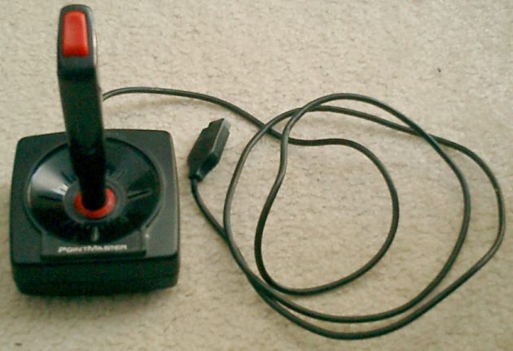

Um manípulo eletrónico joystick é um periférico de computador e videojogos pessoal ou um dispositivo geral de controle,
que consiste numa vara vertical, na qual os pivôs se aproximam de uma extremidade e transmitem o seu ângulo em duas ou três dimensões a um computador.
O joystick é usado frequentemente para controlar os jogos de vídeo, e têm geralmente um ou mais botões de pressão cujo estado pode também ser lido pelo
computador.

O termo joystick transformou-se em um sinônimo para controladores de jogo que podem ser conectados ao computador desde que o computador defina a entrada
como uma "porta de jogos".
Além de controlar jogos, os manches são usados também para controlar máquinas tais como elevadores, guindastes, caminhões. Os joysticks mais diminutos
recentemente foram adotados como dispositivos navegacionais para equipamentos eletrônicos menores tais como telefones móveis.
O primeiro joystick da Atari, desenvolvido para o Atari 2600, foi um dos primeiros joystick digitais, composto por um simples botão de disparo, conectado via conector DE-9,
suas especificações eletrônicas serviram como base para muitos anos. Nas construções de joystick, foram frequentemente usados como controladores nas
primeira e segunda geração de games console, daí então desenvolveu-se a família dos comandos de videojogos, com a Nintendo Entertainment System e Sega
Master System de entre os anos de 1985 e 1986.
A atividade consiste em criar um Joystick volante de carro para jogo de corrida com papelão, palitos e cola quente, para usar em jogos no celular.